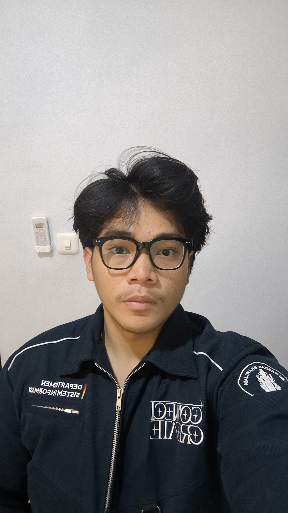
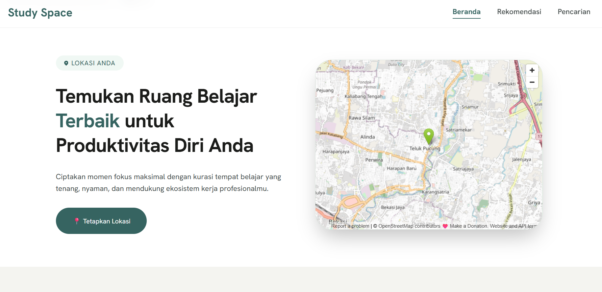
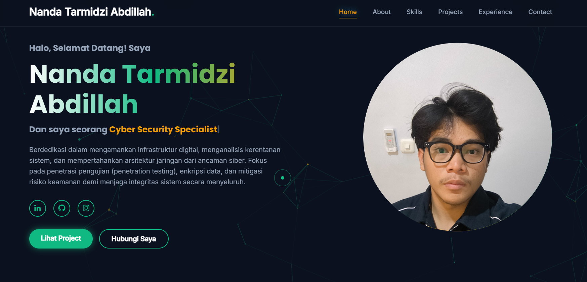
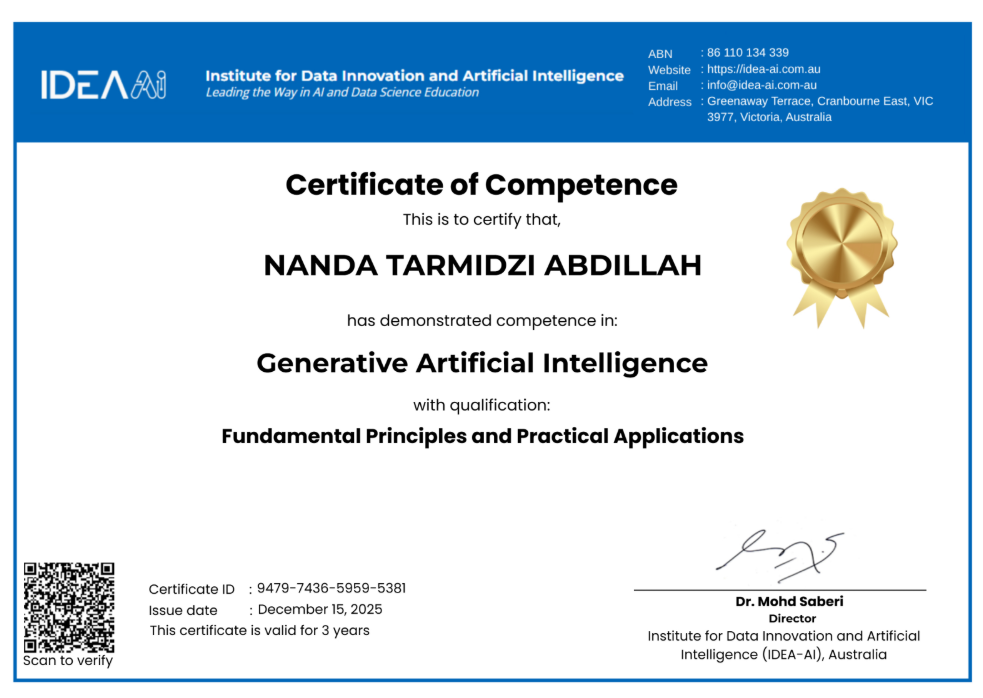

Berdedikasi dalam mengamankan infrastruktur digital, menganalisis kerentanan sistem, dan mempertahankan arsitektur jaringan dari ancaman siber. Fokus pada penetrasi pengujian (penetration testing), enkripsi data, dan mitigasi risiko keamanan demi menjaga integritas sistem secara menyeluruh.

Sebagai Mahasiswa Teknologi Informasi yang fokus pada Cyber Security, saya memadukan keahlian analisis sistem dengan pertahanan digital. Saya mempelajari bagaimana membangun aplikasi web yang kokoh dari dasar serta menganalisis celah keamanan (vulnerability assessment) untuk melindunginya dari eksploitasi pihak luar.
Menganalisis kerentanan dan menerapkan pertahanan sistem yang optimal sesuai standar keamanan.
Menulis kode yang terstruktur, rapi, dan meminimalkan celah keamanan (vulnerability).
Menjaga kerahasiaan dan validitas data di dalam basis data agar tidak mudah dimanipulasi.

Sebuah platform berbasis web yang dirancang untuk membantu mahasiswa dan pekerja jarak jauh menemukan lingkungan visual yang ideal untuk produktivitas maksimal.

Merancang maket antarmuka interaktif yang aman, kemudian mengimplementasikannya ke dalam struktur kode web front-end yang terstruktur tinggi serta responsif.

Kualifikasi internasional resmi dalam mendalami prinsip-prinsip fundamental serta aplikasi praktis teknologi Generative Artificial Intelligence.
Menyiapkan dan mengelola seluruh perlengkapan yang dibutuhkan selama acara berlangsung, serta mendata kebutuhan alat secara rinci agar tidak ada yang terlewat. Mengatur distribusi dan pengembalian barang dengan tertib guna memastikan setiap perlengkapan digunakan secara optimal.
Bertanggung jawab dalam menegakkan tata tertib PKKMB & SA FILKOM 2026, serta menanamkan nilai disiplin, tanggung jawab, dan etika berkegiatan bagi mahasiswa baru.
Memimpin koordinasi divisi logistik acara terkait kebutuhan teknis operasional lapangan, pengelolaan perlengkapan utama, serta penyediaan konsumsi panitia secara berkala.
Berfokus pada pengembangan inovasi kreatif serta bisnis yang berkelanjutan. Menjadi wadah dan solusi bagi mahasiswa Departemen Sistem Informasi untuk mengasah, mengembangkan, serta menumbuhkan jiwa kewirausahaan secara nyata dan aplikatif.